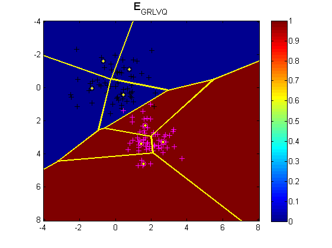
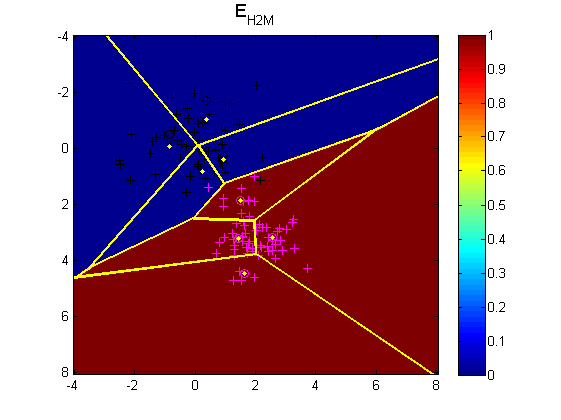
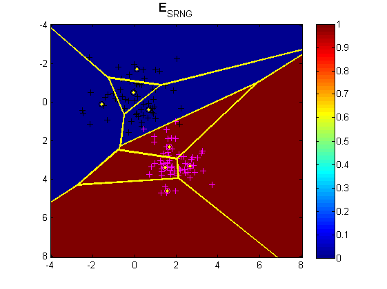
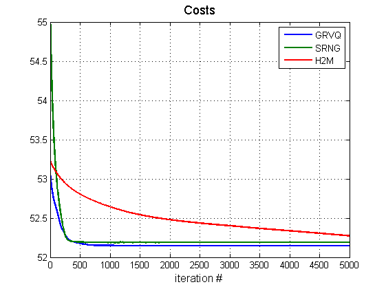
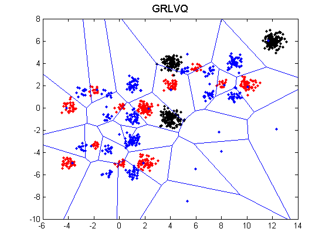
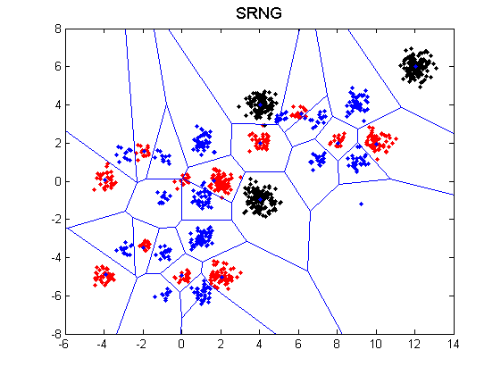
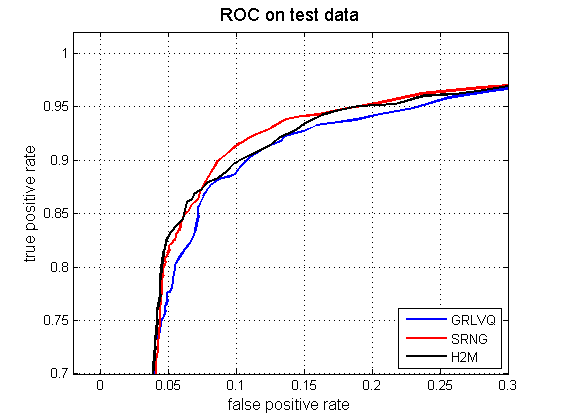

Contents
First example on 2 Gaussians mixture
clear, clc, close all hidden
d = 2;
Ntrain = 120;
m = 2;
M0 = [0 ; 0];
R0 = [1 0 ; 0 1];
M1 = [2 ; 3];
R1 = [0.5 0.1 ; 0.2 1];
vect_test = (-4:0.1:8);
options.epsilonk = 0.005;
options.epsilonl = 0.001;
options.epsilonlambda = 10e-8;
options.sigmastart = 2;
options.sigmaend = 10e-4;
options.sigmastretch = 10e-3;
options.threshold = 10e-10;
options.xi = 0.3;
options.nb_iterations = 5000;
options.tmax = 1;
options.tmin = 0.1;
options.metric_method = 1;
options.shuffle = 1;
options.updatelambda = 1;
Xtrain = [M0(: , ones(1 , Ntrain/2)) + chol(R0)'*randn(d , Ntrain/2) , M1(: , ones(1 , Ntrain/2)) + chol(R1)'*randn(d , Ntrain/2)];
ytrain = [zeros(1 , Ntrain/2) , ones(1 , Ntrain/2)];
[X , Y] = meshgrid(vect_test);
Xtest = [X(:)' ; Y(:)'];
Nproto_pclass = 4*ones(1 , length(unique(ytrain)));
[yproto_ini , Wproto_ini , lambda_ini] = ini_proto(Xtrain , ytrain , Nproto_pclass);
[yproto_est_GRLVQ , Wproto_est_GRLVQ , lambda_est_GRLVQ , E_GRLVQ] = grlvq_model(Xtrain , ytrain , options , yproto_ini , Wproto_ini , lambda_ini);
[yproto_est_SRNG , Wproto_est_SRNG , lambda_est_SRNG , E_SRNG] = srng_model(Xtrain , ytrain , options , yproto_ini , Wproto_ini , lambda_ini);
[yproto_est_H2M , Wproto_est_H2M , E_H2M] = h2m_glvq_model(Xtrain , ytrain , options , yproto_ini , Wproto_ini , lambda_ini);
ytest_est_GRLVQ = NN_predict(Xtest , yproto_est_GRLVQ , Wproto_est_GRLVQ , lambda_est_GRLVQ , options);
ytest_est_SRNG = NN_predict(Xtest , yproto_est_SRNG , Wproto_est_SRNG , lambda_est_SRNG , options);
ytest_est_H2M = NN_predict(Xtest , yproto_est_H2M , Wproto_est_H2M , [] , options);
indtrain0 = (ytrain == 0);
indtrain1 = (ytrain == 1);
indproto0_GRLVQ = (yproto_est_GRLVQ == 0);
indproto1_GRLVQ = (yproto_est_GRLVQ == 1);
indproto0_SRNG = (yproto_est_SRNG == 0);
indproto1_SRNG = (yproto_est_SRNG == 1);
indproto0_H2M = (yproto_est_H2M == 0);
indproto1_H2M = (yproto_est_H2M == 1);
figure(1)
imagesc(vect_test , vect_test , reshape(ytest_est_GRLVQ , length(vect_test) , length(vect_test)) )
axis ij
hold on
plot(Xtrain(1 , indtrain0) , Xtrain(2 , indtrain0) , 'k+' , Xtrain(1 , indtrain1) , Xtrain(2 , indtrain1) , 'm+' , Wproto_est_GRLVQ(1 , indproto0_GRLVQ) , Wproto_est_GRLVQ(2 , indproto0_GRLVQ) , 'ko' , Wproto_est_GRLVQ(1 , indproto1_GRLVQ) , Wproto_est_GRLVQ(2 , indproto1_GRLVQ) , 'mo')
h = voronoi(Wproto_est_GRLVQ(1 , :) , Wproto_est_GRLVQ(2 , :));
set(h , 'color' , 'y' , 'linewidth' , 2)
hold off
title('E_{GRLVQ}' , 'fontsize' , 13)
colorbar
figure(2)
imagesc(vect_test , vect_test , reshape(ytest_est_SRNG , length(vect_test) , length(vect_test)) )
axis ij
hold on
plot(Xtrain(1 , indtrain0) , Xtrain(2 , indtrain0) , 'k+' , Xtrain(1 , indtrain1) , Xtrain(2 , indtrain1) , 'm+' , Wproto_est_SRNG(1 , indproto0_SRNG) , Wproto_est_SRNG(2 , indproto0_SRNG) , 'ko' , Wproto_est_SRNG(1 , indproto1_SRNG) , Wproto_est_SRNG(2 , indproto1_SRNG) , 'mo')
h = voronoi(Wproto_est_SRNG(1 , :) , Wproto_est_SRNG(2 , :));
set(h , 'color' , 'y' , 'linewidth' , 2)
hold off
title('E_{SRNG}' , 'fontsize' , 13)
colorbar
figure(3)
imagesc(vect_test , vect_test , reshape(ytest_est_H2M , length(vect_test) , length(vect_test)) )
axis ij
hold on
plot(Xtrain(1 , indtrain0) , Xtrain(2 , indtrain0) , 'k+' , Xtrain(1 , indtrain1) , Xtrain(2 , indtrain1) , 'm+' , Wproto_est_H2M(1 , indproto0_H2M) , Wproto_est_SRNG(2 , indproto0_H2M) , 'ko' , Wproto_est_H2M(1 , indproto1_H2M) , Wproto_est_H2M(2 , indproto1_H2M) , 'mo')
h = voronoi(Wproto_est_H2M(1 , :) , Wproto_est_H2M(2 , :));
set(h , 'color' , 'y' , 'linewidth' , 2)
hold off
title('E_{H2M}' , 'fontsize' , 13)
colorbar
figure(4)
h=plot(1:options.nb_iterations,E_GRLVQ , 1:options.nb_iterations,E_SRNG , 1:options.nb_iterations,E_H2M , 'linewidth' , 2);;
xlabel('iteration #' , 'fontsize' , 12)
title('Costs' , 'fontsize' , 13)
legend(h , 'GRVQ' , 'SRNG' , 'H2M' , 'location' , 'northeast');
grid on
   
Second example on artificial data
clear
load artificial
Nproto_pclass = [15 , 12 , 3];
options.epsilonk = 0.005;
options.epsilonl = 0.001;
options.epsilonlambda = 10e-8;
options.sigmastart = 2;
options.sigmaend = 10e-4;
options.sigmastretch = 10e-3;
options.threshold = 10e-10;
options.xi = 3;
options.nb_iterations = 5000;
options.tmax = 1;
options.tmin = 0.1;
options.metric_method = 1;
options.shuffle = 1;
options.updatelambda = 1;
[d , N] = size(X);
ON = ones(1 , N);
n1 = round(0.7*N);
n2 = N - n1;
ind = randperm(length(y));
ind1 = ind(1:n1);
ind2 = ind(n1+1:N);
Xtrain = X(: , ind1);
ytrain = y(ind1);
Xtest = X(: , ind2);
ytest = y(ind2);
Ntest = size(Xtest , 2);
[yproto_ini , Wproto_ini , lambda_ini] = ini_proto(Xtrain , ytrain , Nproto_pclass);
[yproto_est_GRLVQ , Wproto_est_GRLVQ , lambda_est_GRLVQ , E_GRLVQ] = grlvq_model(Xtrain , ytrain , options , yproto_ini , Wproto_ini , lambda_ini);
[yproto_est_SRNG , Wproto_est_SRNG , lambda_est_SRNG , E_SRNG] = srng_model(Xtrain , ytrain , options , yproto_ini , Wproto_ini , lambda_ini);
[yproto_est_H2M , Wproto_est_H2M , E_H2M] = h2m_glvq_model(Xtrain , ytrain , options , yproto_ini , Wproto_ini , lambda_ini);
ytest_est_GRLVQ = NN_predict(Xtest , yproto_est_GRLVQ , Wproto_est_GRLVQ , lambda_est_GRLVQ , options);
ytest_est_SRNG = NN_predict(Xtest , yproto_est_SRNG , Wproto_est_SRNG , lambda_est_SRNG , options);
ytest_est_H2M = NN_predict(Xtest , yproto_est_H2M , Wproto_est_H2M , [] , options);
Perf_GRLVQ = sum(ytest_est_GRLVQ==ytest)/Ntest;
Perf_SRNG = sum(ytest_est_SRNG==ytest)/Ntest;
Perf_H2M = sum(ytest_est_H2M==ytest)/Ntest;
fprintf('Accuracy GRLVQ Test data = %2.4f\n' , Perf_GRLVQ)
fprintf('Accuracy SRNG Test data = %2.4f\n' , Perf_SRNG)
fprintf('Accuracy H2M Test data = %2.4f\n' , Perf_H2M )
figure(5)
plot_label(Xtest , ytest);
hold on
h = voronoi(Wproto_est_GRLVQ(1 , :) , Wproto_est_GRLVQ(2 , :));
hold off
title('GRLVQ' , 'fontsize' , 13)
figure(6)
plot_label(Xtest , ytest);
hold on
h = voronoi(Wproto_est_SRNG(1 , :) , Wproto_est_SRNG(2 , :));
hold off
title('SRNG' , 'fontsize' , 13)
figure(7)
plot_label(Xtest , ytest);
hold on
h = voronoi(Wproto_est_H2M(1 , :) , Wproto_est_H2M(2 , :));
hold off
title('H2M' , 'fontsize' , 13)
Accuracy GRLVQ Test data = 0.9231
Accuracy SRNG Test data = 0.9759
Accuracy H2M Test data = 0.9463
 
Third example : ROC on ionosphere data
clear
load ionosphere
Nproto_pclass = 4*ones(1 , length(unique(y)));
options.epsilonk = 0.005;
options.epsilonl = 0.001;
options.epsilonlambda = 10e-8;
options.sigmastart = 2;
options.sigmaend = 10e-4;
options.sigmastretch = 10e-3;
options.threshold = 10e-10;
options.xi = 10;
options.tmax = 0.2;
options.tmin = 0.1;
options.nb_iterations = 10000;
options.metric_method = 1;
options.shuffle = 1;
options.updatelambda = 1;
options.method = 7;
options.holding.rho = 0.7;
options.holding.K = 20;
normalize(X);
[Itrain , Itest] = sampling(X , y , options);
Ntrain = size(Itrain , 2);
Ntest = size(Itest , 2);
Perftrain_GRLVQ = zeros(1 , options.holding.K);
Perftest_GRLVQ = zeros(1 , options.holding.K);
tptrain_GRLVQ = zeros(options.holding.K , 100);
fptrain_GRLVQ = zeros(options.holding.K , 100);
tptest_GRLVQ = zeros(options.holding.K , 100);
fptest_GRLVQ = zeros(options.holding.K , 100);
Perftrain_SRNG = zeros(1 , options.holding.K);
Perftest_SRNG = zeros(1 , options.holding.K);
tptrain_SRNG = zeros(options.holding.K , 100);
fptrain_SRNG = zeros(options.holding.K , 100);
tptest_SRNG = zeros(options.holding.K , 100);
fptest_SRNG = zeros(options.holding.K , 100);
Perftrain_H2M = zeros(1 , options.holding.K);
Perftest_H2M = zeros(1 , options.holding.K);
tptrain_H2M = zeros(options.holding.K , 100);
fptrain_H2M = zeros(options.holding.K , 100);
tptest_H2M = zeros(options.holding.K , 100);
fptest_H2M = zeros(options.holding.K , 100);
for i = 1 : size(Itrain , 1)
[Xtrain , ytrain , Xtest , ytest] = samplingset(X , y , Itrain , Itest , i);
[yproto_ini , Wproto_ini , lambda_ini] = ini_proto(Xtrain , ytrain , Nproto_pclass);
[yproto_est_GRLVQ , Wproto_est_GRLVQ , lambda_est_GRLVQ , E_GRLVQ] = grlvq_model(Xtrain , ytrain , options , yproto_ini , Wproto_ini , lambda_ini);
[yproto_est_SRNG , Wproto_est_SRNG , lambda_est_SRNG , E_SRNG] = srng_model(Xtrain , ytrain , options , yproto_ini , Wproto_ini , lambda_ini);
[yproto_est_H2M , Wproto_est_H2M , E_H2M] = h2m_glvq_model(Xtrain , ytrain , options , yproto_ini , Wproto_ini , lambda_ini);
[ytrain_est_GRLVQ , disttrain_GRLVQ] = NN_predict(Xtrain , yproto_est_GRLVQ , Wproto_est_GRLVQ , lambda_est_GRLVQ , options);
[ytrain_est_SRNG , disttrain_SRNG] = NN_predict(Xtrain , yproto_est_SRNG , Wproto_est_SRNG , lambda_est_SRNG , options);
[ytrain_est_H2M , disttrain_H2M] = NN_predict(Xtrain , yproto_est_H2M , Wproto_est_H2M , [] , options);
[ytest_est_GRLVQ , disttest_GRLVQ] = NN_predict(Xtest , yproto_est_GRLVQ , Wproto_est_GRLVQ , lambda_est_GRLVQ , options);
[ytest_est_SRNG , disttest_SRNG] = NN_predict(Xtest , yproto_est_SRNG , Wproto_est_SRNG , lambda_est_SRNG , options);
[ytest_est_H2M , disttest_H2M] = NN_predict(Xtest , yproto_est_H2M , Wproto_est_H2M , [] , options);
Perftrain_GRLVQ(i) = sum(ytrain == ytrain_est_GRLVQ)/Ntrain;
Perftest_GRLVQ(i) = sum(ytest == ytest_est_GRLVQ)/Ntest;
Perftrain_SRNG(i) = sum(ytrain == ytrain_est_SRNG)/Ntrain;
Perftest_SRNG(i) = sum(ytest == ytest_est_SRNG)/Ntest;
Perftrain_H2M(i) = sum(ytrain == ytrain_est_H2M)/Ntrain;
Perftest_H2M(i) = sum(ytest == ytest_est_H2M)/Ntest;
dktrain_GRLVQ = min(disttrain_GRLVQ(yproto_ini==-1 , :));
dltrain_GRLVQ = min(disttrain_GRLVQ(yproto_ini~=-1 , :));
nutrain_GRLVQ = (dktrain_GRLVQ - dltrain_GRLVQ)./(dktrain_GRLVQ + dltrain_GRLVQ);
margintrain_GRLVQ = 1.0./(1.0 + exp(-options.xi*nutrain_GRLVQ));
[tptrain_GRLVQ(i , :) , fptrain_GRLVQ(i , :)] = basicroc(ytrain , margintrain_GRLVQ);
dktest_GRLVQ = min(disttest_GRLVQ(yproto_ini==-1 , :));
dltest_GRLVQ = min(disttest_GRLVQ(yproto_ini~=-1 , :));
nutest_GRLVQ = (dktest_GRLVQ - dltest_GRLVQ)./(dktest_GRLVQ + dltest_GRLVQ);
margintest_GRLVQ = 1.0./(1.0 + exp(-options.xi*nutest_GRLVQ));
[tptest_GRLVQ(i , :) , fptest_GRLVQ(i , :)] = basicroc(ytest , margintest_GRLVQ);
dktrain_SRNG = min(disttrain_SRNG(yproto_ini==-1 , :));
dltrain_SRNG = min(disttrain_SRNG(yproto_ini~=-1 , :));
nutrain_SRNG = (dktrain_SRNG - dltrain_SRNG)./(dktrain_SRNG + dltrain_SRNG);
margintrain_SRNG = 1.0./(1.0 + exp(-options.xi*nutrain_SRNG));
[tptrain_SRNG(i , :) , fptrain_SRNG(i , :)] = basicroc(ytrain , margintrain_SRNG);
dktest_SRNG = min(disttest_SRNG(yproto_ini==-1 , :));
dltest_SRNG = min(disttest_SRNG(yproto_ini~=-1 , :));
nutest_SRNG = (dktest_SRNG - dltest_SRNG)./(dktest_SRNG + dltest_SRNG);
margintest_SRNG = 1.0./(1.0 + exp(-options.xi*nutest_SRNG));
[tptest_SRNG(i , :) , fptest_SRNG(i , :)] = basicroc(ytest , margintest_SRNG);
dktrain_H2M = min(disttrain_H2M(yproto_ini==-1 , :));
dltrain_H2M = min(disttrain_H2M(yproto_ini~=-1 , :));
nutrain_H2M = (dktrain_H2M - dltrain_H2M)./(dktrain_H2M + dltrain_H2M);
margintrain_H2M = 1.0./(1.0 + exp(-options.xi*nutrain_H2M));
[tptrain_H2M(i , :) , fptrain_H2M(i , :)] = basicroc(ytrain , margintrain_H2M);
dktest_H2M = min(disttest_H2M(yproto_ini==-1 , :));
dltest_H2M = min(disttest_H2M(yproto_ini~=-1 , :));
nutest_H2M = (dktest_H2M - dltest_H2M)./(dktest_H2M + dltest_H2M);
margintest_H2M = 1.0./(1.0 + exp(-options.xi*nutest_H2M));
[tptest_H2M(i , :) , fptest_H2M(i , :)] = basicroc(ytest , margintest_H2M);
fprintf('%d/%d\n' , i , options.holding.K)
drawnow
end
fprintf('Accuracy GRLVQ Train/Test %2.4f/%2.4f\n' , mean(Perftrain_GRLVQ,2) , mean(Perftest_GRLVQ,2))
fprintf('Accuracy SRNG Train/Test %2.4f/%2.4f\n' , mean(Perftrain_SRNG,2) , mean(Perftest_SRNG,2))
fprintf('Accuracy H2M Train/Test %2.4f/%2.4f\n' , mean(Perftrain_H2M,2) , mean(Perftest_H2M,2))
figure(8)
plot(mean(fptest_GRLVQ , 1) , mean(tptest_GRLVQ , 1) , mean(fptest_SRNG , 1) , mean(tptest_SRNG , 1) , 'r' , mean(fptest_H2M , 1) , mean(tptest_H2M , 1) , 'k' , 'linewidth' , 2)
xlabel('false positive rate' , 'fontsize' , 12);
ylabel('true positive rate' , 'fontsize' , 12);
title('ROC on test data', 'fontsize' , 13);
legend('GRLVQ' , 'SRNG' , 'H2M' , 'location' , 'southeast')
axis([-0.02 , 0.3 , 0.7 , 1.02])
grid on
1/20
2/20
3/20
4/20
5/20
6/20
7/20
8/20
9/20
10/20
11/20
12/20
13/20
14/20
15/20
16/20
17/20
18/20
19/20
20/20
Accuracy GRLVQ Train/Test 0.9333/0.8829
Accuracy SRNG Train/Test 0.9441/0.8862
Accuracy H2M Train/Test 0.9474/0.8652
